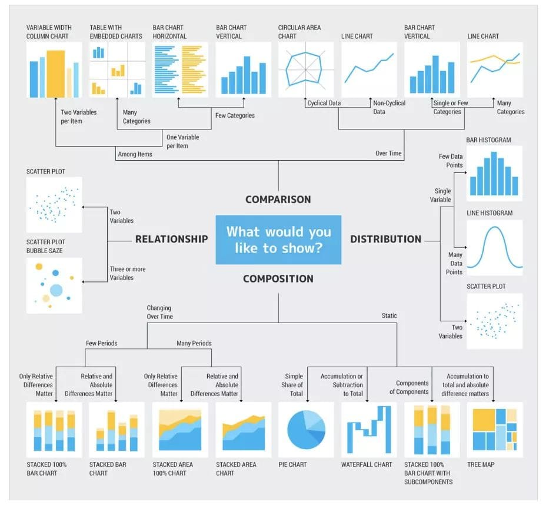

# Exploratory Data Analysis #### 講者：陳奎銘 `Benjamin Chen`
## Outline - 探索資料分析 - 探索 Netflix 資料 - 台灣各行業待遇


## Exploratory Data Analysis - 探索資料分析- EDA - 初步分析調查資料，觀察資料的特徵 - 視覺化
## EDA 的目的 - 檢查資料是否正確 - 觀察現象並提出假設 - 確認對資料的假設是否合理 - 選擇正確的分析工具和技術 - 提供後續資料收集的基礎
## 檢查資料是否正確 - 資料型態不一致 - 離群值 - 資料不完整 - 亂碼、特殊符號或錯字 
## 觀察現象並提出假設 觀察資料彼此之間的關係，提出各種可能性。  <font size=2 color="#33C7FF" style="position: absolute; top: 650px; left: 50px">https://www.twtpo.org.tw/upload/201605/27/201605271657441273.pdf</font>
## 確認對資料的假設是否合理 透過統計方法對資料做檢查，確認假設 
## 選擇正確的分析工具和技術 考慮資料的分佈情況，以及要解決的問題，選擇方法。 
## 提供後續資料收集的基礎 針對現有數據與問題，尋找更多可以協助解決問題的數據。 
## EDA 步驟 - 了解資料背後的故事 - 了解資料欄位與類型 - 檢查和整理資料
## 了解資料背後的故事 - 收集目的 - 收集方法 - 物理意義
## 了解資料欄位與類型 - 數值型資料 - 類別型資料
## 了解資料欄位與類型 - 數值型資料 - 以數字表示 - 相對的大小關係 - 可以做四則運算 - 例如：薪水、人數、時間、溫度....
## 了解資料欄位與類型 - 類別型資料 - 大多以字串表示，但也可以以數字表示 - 不一定有相對的大小關係 - 不能做四則運算 - 例如：名次、性別、年齡區間
## 了解資料欄位與類型 數值型資料轉換成類別型資料：Data Binning 
## 檢查和整理資料 - 修正資料 - 確定資料是否合理 - ETL- Extract, Transform, Load
## 觀察數據 - 單變量 - 多變量
## 觀察數據- 單變量類別型  <font size=2 color="#33C7FF" style="position: absolute; top: 650px; left: 50px"> https://udn.com/news/covid19/COVID19_Taiwan</font>
 <font size=2 color="#33C7FF" style="position: absolute; top: 650px; left: 50px"> https://udn.com/news/covid19/COVID19_Taiwan</font>
 <font size=2 color="#33C7FF" style="position: absolute; top: 650px; left: 50px"> https://udn.com/news/covid19/COVID19_Taiwan</font>
<!-- .slide: data-background="media/pie_chart.png" --> <font size=2 color="#33C7FF" style="position: absolute; top: 650px; left: 50px"> http://www.labo.mathieurella.fr/?p=403</font>
## 觀察數據- 單變量數值型 - 中心點 - 平均數 - 中位數 - 眾數 - 標準差 - 四分位數
## Box Plot <img src=media/EDA_4.png height="600px">
## Histogram 
## 觀察數據- 多變量類別型 - 類別 vs. 類別 - 類別 vs. 數值 - 數值 vs. 數值
## 類別 vs. 類別  <font size=2 color="#33C7FF" style="position: absolute; top: 650px; left: 50px"> https://udn.com/news/covid19/COVID19_Taiwan</font>
## 類別 vs. 數值  <font size=2 color="#33C7FF" style="position: absolute; top: 650px; left: 50px"> https://udn.com/news/covid19/COVID19_Taiwan</font>
## 數值 vs. 數值 散佈圖與趨勢線 
## 數值 vs. 數值 時間關係 

 <font size=2 color="#33C7FF" style="position: absolute; top: 650px; left: 50px">https://www.reddit.com/r/datascience/comments/dijadz/an_easy_guide_for_choosing_visual_graphs/</font>
# Netflix https://about.netflix.com/zh_tw
## 取得教學範例 - Netflix - https://reurl.cc/6Zq3z5 - salary - https://reurl.cc/2ZQkdm - 先儲存副本：檔案-->在雲端硬碟中儲存副本 - 若尚未登入 google 帳號，會被要求登入
## Colab 上傳檔案 
## Colab 上傳檔案 - 由於只能連續使用12小時，時間一到檔案也會消失，需要重新上傳。 
## Colab 上傳檔案 - 也可以用 `colab` 的套件上傳檔案  
## Netflix Data - 請先下載這些檔案，並上傳到Colab - 連結：https://reurl.cc/XjEYye - https://www.kaggle.com/datasets/shivamb/netflix-shows - `netflix_titles.csv` - https://github.com/sahildit/IMDB-Movies-Extensive-Dataset-Analysis - `IMDb ratings.csv` - `IMDb movies.csv`
## Read Netflix data ```python import pandas as pd netflix = pd.read_csv("netflix_titles.csv") netflix ``` 
## 看看有多少資料 ```python netflix.count() ``` <img src=media/netflix_2.png width="40%">
有些欄位資料比較少，是因為有些列沒有資料，也就是NaN。 ```python netflix[netflix.director.isna() == True] ``` <img src=media/netflix_3.png width="70%">
## 了解資料含義 - show_id - Unique ID for every Movie / TV Show - type - Identifier - A Movie or TV Show - title - Title of the Movie / Tv Show - director - Director of the Movie
## 了解資料含義 - cast - Actors involved in the movie / show - country - Country where the movie / show was produced - date_added - Date it was added on Netflix - release_year - Actual Release year of the move / show
## 了解資料含義 - rating - TV Rating of the movie / show - https://gopioneer.com/wp-content/uploads/2017/01/dtv_movieratings.pdf - duration - Total Duration - in minutes or number of seasons - listed_in - Genere - description - The summary description
## 選擇欄位觀察 ```python netflix.type netflix['type'] ``` 
## 選擇欄位觀察 ```python netflix[['type']] ``` 
## 選擇欄位觀察 ```python netflix[["type", "title"]] ``` 
## 選擇特定列數與欄位 ```python netflix.loc[[1, 3, 5], ["type", "title"]] ``` 
## 選擇特定列數與欄位 ```python # 也可以限定條件 netflix.loc[netflix.type == "Movie", ["type", "title"]] ```  ---- ## 觀察一下 type ```python # 算出每種 type 有多少作品 netflix.groupby("type").agg({"title":"count"}) ``` 
## 觀察一下 type- Pie Chart ```python import plotly.express as px fig = px.pie(netflix, "type") fig.show() ``` 
## 觀察一下 type- Bar Chart 可能更好 ```python # 用histogram 畫 bar chart? px.histogram(netflix, "type") ``` 
## 觀察一下 type- Bar Chart 可能更好 ```python netflix_type = netflix.groupby("type").agg({"title":"count"}).reset_index() # 改變欄位名稱 netflix_type.rename(columns={"title":"ammount"}, inplace=True) px.bar(netflix_type, x="type", y="ammount") ``` 
## 存檔 ```python fig.write_html("pie.html") ``` ```python fig.write_image("pie.png") ``` 出現錯誤了！ 
## 存檔 - 安裝套件 ``` !pip install -U kaleido ```
## 存檔 - 重新啟動執行階段 - 執行上方的儲存格 
## 存檔 - 最後存檔 ```python fig.write_image("pie.png") ```
## 觀察 Country ```python netflix.groupby("country").agg({"show_id":"count"}).reset_index() ```  有些資料看起來怪怪的
## 觀察 Country 將他們拆解開來 ```python ", France, Algeria".split(",") ", France, Algeria".replace(" ", "") ``` 
## 觀察 Country - 把空格拿掉，利用逗點區隔字串 ```python temp = ", France, Algeria".replace(" ", "").split(",") temp ``` ``` ['', 'France', 'Algeria'] ``` - 再拿掉空字串 ```python temp.remove("") temp ``` ``` ['France', 'Algeria'] ```
## 觀察 Country 把字串用逗點合併 ```python ",".join(temp) ``` ``` France,Algeria ```
## 觀察 Country - 將空格拿掉，再塞回去原表格 - 計算每個國家實際參與多少作品 ```python [1-2|3-5|6-8|9-13|3,14|15-17] countries = {} netflix['country'] = netflix['country'].fillna('Unknown') for i in list(netflix['country']): temp = i.replace(", ", ",").split(',') correction = temp.copy() for j in temp: if j == "": correction.remove("") else: if j in list(countries.keys()): countries[j] += 1 else: countries[j] = 1 netflix.loc[netflix.country == i, "country"] = ",".join(correction) countries = pd.DataFrame({ "country":list(countries.keys()), "show_number":list(countries.values())}) ```
## 觀察 Country ```python countries.sort_values(by="show_number", ascending=False, inplace=True) px.bar(countries.head(10), x="country", y="show_number") ``` 
## 觀察上架年月 
## 觀察上架年月 ```python netflix.date_added.str.slice(start=-4) ``` ``` 0 2021 1 2021 2 2021 3 2021 4 2021 ... 8802 2019 8803 2019 8804 2019 8805 2020 8806 2019 ```
## 觀察上架年月 ``` netflix_year = netflix[['date_added']].dropna() netflix_year['year'] = netflix_year.date_added.str.slice(start=-4) ```
## 觀察上架年月 ``` df = netflix_year.groupby('year').count().reset_index() px.line(df, x="year", y="date_added") ```
## 觀察上架年月 ```python netflix_date = netflix[['date_added']].dropna() netflix_date.date_added.str.extract("([A-z]+)") ``` ``` 0 September 1 September 2 September 3 September 4 September ... ... 8802 November 8803 July 8804 November 8805 January 8806 March ```
## 觀察上架年月 ```python netflix_date['year'] = netflix_date.date_added.str.slice(start=-4) netflix_date['month'] = netflix_date.date_added.str.extract("([A-z]+)") netflix_date.groupby('year')['month'].value_counts() ``` 
## 觀察上架年月 ```python netflix_date.groupby('year')['month'].value_counts().unstack() ``` 
## 觀察上架年月 ```python netflix_date.groupby('year')['month'].value_counts().unstack().fillna(0) ``` 
## 觀察上架年月 ```python month_order = ['January', 'February', 'March', 'April', 'May', 'June', 'July', 'August', 'September', 'October', 'November', 'December'][::-1] month_order ``` ``` ['December', 'November', 'October', 'September', 'August', 'July', 'June', 'May', 'April', 'March', 'February', 'January'] ```
## 觀察上架年月 ```python netflix_date.groupby('year')['month'].value_counts().unstack().fillna(0)[month_order] ``` 
## 觀察上架年月 ```python df = netflix_date.groupby('year')['month'].value_counts().unstack().fillna(0)[month_order] px.imshow(df) ``` 
## 觀察上架年月 ```python df = netflix_date.groupby('year')['month'].value_counts().unstack().fillna(0)[month_order].T px.imshow(df) ``` 
## 觀察釋出年份 ```python px.histogram(netflix, "release_year") ``` 
## Netflix 分級 ```python netflix_movies = netflix[netflix.type == 'Movie'] px.histogram(netflix_movies, x="rating") ``` 
## Netflix 分級 ```python netflix_movies[netflix_movies.rating.str.contains("min") == True] ``` 
## Netflix 分級 大家動手查一下電影名稱～ https://www.google.com/search?q=Louis+C.K.+2017&oq=Louis+C.K.+2017&aqs=chrome..69i57j0i30l9.1134j0j7&sourceid=chrome&ie=UTF-8
<!-- .slide: data-background-color="#ffffff" data-background-iframe="https://gopioneer.com/wp-content/uploads/2017/01/dtv_movieratings.pdf" -->
```python netflix_movies.loc[netflix_movies.rating.str.contains("min") == True, "duration"] = \ netflix_movies.loc[netflix_movies.rating.str.contains("min") == True, "rating"] netflix_movies.loc[netflix_movies.rating.str.contains("min") == True, "rating"] = "R" netflix_movies[netflix_movies.cast == "Louis C.K."] ``` 
## TV Show 分級 改成 TV Show 的話，可以怎麼做？ https://www.youtube.com/watch?v=4xG2aJa6UyY
```python netflix_TV = netflix[netflix.type == "TV Show"] px.histogram(netflix_TV, x="rating") ``` 
## 片長 ```python netflix_movies['duration'] ``` 
## 片長 怎麼確定大家都有" min"？ https://www.youtube.com/watch?v=CH50zuS8DD0
## 片長 ```python len(netflix_movies[netflix_movies.duration.str.contains("min") == True]) ```
## 片長 ```python netflix_movies.loc[:,'duration'] = netflix_movies.duration.str.replace(" min", "").astype(float) netflix_movies['duration'] ``` 
## 片長 ```python netflix_movies = netflix_movies.dropna(subset=['duration']) px.histogram(netflix_movies, x="duration") ``` 
## 片長 ```python netflix_movies.duration.describe() ``` 
## 影片種類 `WordCloud` 文字雲
## 影片種類 ```python netflix.listed_in.unique() ``` ``` array(['Documentaries', 'International TV Shows, TV Dramas, TV Mysteries', 'Crime TV Shows, International TV Shows, TV Action & Adventure', 'Docuseries, Reality TV', 'Sci-Fi & Fantasy',..... ``` `WordCloud`會把一些符號當作文字切割點
## 影片種類 `WordCloud`會把一些符號當作文字切割點 ```python temp = netflix.dropna(subset=['listed_in']) temp["listed_in"] = temp.listed_in.str.replace(", ", ",") temp["listed_in"] = temp.listed_in.str.replace(" ", "_") temp["listed_in"] = temp.listed_in.str.replace("-", "_") temp["listed_in"] = temp.listed_in.str.replace("&", "and") ```
## 影片種類 ```python text = ",".join(list(temp.listed_in.values)) text ``` ``` Documentaries, International_TV_Shows,TV_Dramas, TV_Mysteries, Crime_TV_Shows,International_TV_Shows, TV_Action_and_Adventure, Docuseries,Reality_TV,, .... ```
## 影片種類 ```python from wordcloud import WordCloud, STOPWORDS, ImageColorGenerator wordcloud = WordCloud( max_words=1000000, colormap="Blues", collocations=False, width=800, height=400).generate(text) wordcloud.to_file("wordcloud.png") ```
## 影片種類 ```python wordcloud.to_image() ``` 
## 影片種類 也可以用`plotly`呈現圖片 ```python from skimage import io img = io.imread('wordcloud.png') fig = px.imshow(img) fig.update_xaxes(showticklabels=False) fig.update_yaxes(showticklabels=False) fig.show() ```
## 影片種類 ```python genre = pd.DataFrame(dict(genre=text.split(", "))) px.histogram(genre, x="genre") ``` 
## 如果改成演員，可以怎麼做？ https://www.youtube.com/watch?v=_W0bSen8Qjg
## 演員 ```python temp = netflix.dropna(subset=['cast']) temp["cast"] = temp.cast.str.replace(", ", ",") temp["cast"] = temp.cast.str.replace(" ", "_") temp["cast"] = temp.cast.str.replace("-", "_") text = ",".join(list(temp.cast.values)) wordcloud = WordCloud( max_words=1000000, colormap="Blues", collocations=False, width=800, height=400).\ generate(text) wordcloud.to_image() ```
## 演員 ```python cast = pd.DataFrame(dict(cast=text.split(","))) cast.cast.value_counts() ``` ```python temp[temp.cast.str.contains("Anupam_Kher") == True] ```
## IMDb 加權評級 讀取電影評級資料 ```python imdb_rating = pd.read_csv("IMDb ratings.csv") imdb_rating.head() ``` 
## IMDb 加權評級 讀取電影基本資料，取得電影名稱 ```python imdb_movie = pd.read_csv("IMDb movies.csv") imdb_movie.head() ``` 
## IMDb 加權評級 整合資料：把電影名稱和電影評級合在一起 ```python imdb = imdb_rating[["imdb_title_id", "weighted_average_vote"]].merge( imdb_movie[['imdb_title_id', 'title', 'original_title', 'genre']], on="imdb_title_id", how="inner" ) imdb.head() ``` 
## IMDb 加權評級 再跟將加權評級由高到低排序 ```python netflix_rating = netflix.merge(imdb, on="title", how="inner") netflix_rating.sort_values(by="weighted_average_vote", ascending=False, inplace=True, ignore_index=True) netflix_rating[["title", "weighted_average_vote"]].head(10) ``` 
## IMDb 加權評級 觀察 Netflix 分數最高前十名電影 ``` px.sunburst( netflix_rating.head(10), path=['title','country', "release_year"], values='weighted_average_vote', color='weighted_average_vote') ``` 
# TF-IDF Term Frequency–Inverse Document Frequency
## TF-IDF - Term Frequency：某個詞在某份文件的出現頻率 $$ tf_i = \frac{n_i}{\sum _{i} n_i} $$ - Inverse Document Frequency：考慮所有文件中，有某個詞的文件比例 $$ idf_i = log\frac{D}{d_t} $$
## TF-IDF - TF-IDF：某個詞對於某份文件的重要程度 $$ tfidf_i = tf_i \times idf_i $$
## TF-IDF Matrix ```python from sklearn.feature_extraction.text import TfidfVectorizer from sklearn.metrics.pairwise import cosine_similarity tfidf = TfidfVectorizer() # 以每部作品的描述生成 TF-IDF Matrix netflix['description'] = netflix['description'].fillna('') tfidf_matrix = tfidf.fit_transform(netflix['description']) tfidf_matrix.shape ``` ``` (8807, 19159) # 8807 部作品，19159 個詞，總共 8007 * 19159 個 TF-IDF ```
## 觀察作品描述 ```python netflix['description'][0] ``` ``` As her father nears the end of his life, filmmaker Kirsten Johnson stages his death in inventive and comical ways to help them both face the inevitable. ``` ```python tfidf.vocabulary_.items() ``` ``` # (詞, 編號) dict_items([ ('as', 1189), ('her', 7920), ('father', 6284), ('nears', 11451), ('the', 17086), ('end', 5663) ...]) ```
## 觀察 TF-IDF ```python print(tfidf_matrix[0]) ``` ``` # (作品編號, 字詞編號) TF-IDF (0, 8602) 0.31411565402591446 (0, 6157) 0.18694283720684277 (0, 2234) 0.19406081366225025 (0, 17098) 0.1519689961281734 (0, 7900) 0.15346672110639778 (0, 17284) 0.05534156541761003 (0, 18547) 0.21179458793624484 (0, 3514) 0.28988269415874907 (0, 880) 0.05460285578227096 ... ``` - 當某個詞出現在該文件才會有 TF-IDF 的數值，否則為零 - 每部作品的描述視為一份文件，每份文件都會有一個長度為 19159 的 TF-IDF 向量
## 計算作品之間的相似程度 - 利用作品描述得到 TF-IDF 向量 - 利用 TF-IDF 向量計算每部作品之間像似程度 - Cosine Similarity $$ similarity(A, B) = \frac{A \cdot B}{|A| \times |B|} = $$ $$ \frac{\sum_{i=1}^{n} A_i \times B_i}{\sqrt{\sum _{i=1} ^{n} (A_i)^2} \times \sqrt{\sum _{i=1} ^{n} (B_i)^2}} $$
## 計算作品之間的相似程度 ```python cosine_sim = cosine_similarity(tfidf_matrix) cosine_sim.shape ``` ``` (8807, 8807) ```
## 產生 Series Data ```python indices = pd.Series(netflix.index, index=netflix.title) indices ``` ``` title Dick Johnson Is Dead 0 Blood & Water 1 Ganglands 2 Jailbirds New Orleans 3 Kota Factory 4 ``` ```python indices["Blood & Water"] ``` ``` 1 ```
## 推薦作品 - 利用作品描述的相似程度，推薦類似說明的作品 - TF-IDF - cosine similarity - 找出除了自己以外，最相似的五個作品
## 推薦作品 ```python def get_recommendations(title, cosine_sim=cosine_sim, indices): idx = indices[title] sim_scores = list(enumerate(cosine_sim[idx])) sim_scores = sorted(sim_scores, key=lambda x: x[1], reverse=True) sim_scores = sim_scores[1:6] movie_indices = [i[0] for i in sim_scores] return netflix.iloc[movie_indices] ```
<!-- .slide: data-background-color="#ffffff" data-background-iframe="https://zh.wikipedia.org/zh-tw/%E6%9D%8F%E6%9E%97%E9%86%AB%E9%99%A2_(%E9%9B%BB%E5%BD%B1)" -->
## 推薦作品 ```python ans = get_recommendations('Hospital') ans[["title", "listed_in"]] ``` 
# 台灣各行業薪資分布 https://earnings.dgbas.gov.tw/
## 取得教學範例 - 先在 Google Drive 儲存副本： - https://colab.research.google.com/drive/10PQjzDzbRE50W0ykYDY_LQmswOiirZJh?usp=sharing - 下載資料： - `salary_hour.csv` - https://reurl.cc/XjEYye - 將`salary_hour.csv`上傳到 colab
## 觀察資料 ```python import pandas as pd data = pd.read_csv("salary_hour.csv") data ``` 
## 觀察資料 - year：缺值 - month_salary_NDT：是字串，因為數字之間有逗號 - population：數字之間有逗號 
## 資料前處理- year - 先把缺值填滿 ```python data['year'] = data.year.fillna(method="ffill") ``` - extract 數值，該怎麼做？ youtube.com/watch?v=4xG2aJa6UyY
## 資料前處理- 年份 ```python data['year'] = data.year.str.extract("([0-9]+)") data['year'] = data.year.astype(int) ```
## 資料前處理- 月薪、人數和工時 - `month_salary_NDT` 和 `population` - 去除逗號，該怎麼做？ - 有些資料顯示成 `-`，代表那一年度，該職業沒有資料，可以用 `None`代替 - 從字串變成整 `int` 或 `float`，該怎麼做？ https://www.youtube.com/watch?v=_W0bSen8Qjg
## 資料前處理- 月薪、人數和工時 ```python data["month_salary_NTD"] = data.month_salary_NTD.str.replace(",", "") data.loc[data.month_salary_NTD == "-", "month_salary_NTD"] = None data["month_salary_NTD"] = data.month_salary_NTD.astype(float) data["population"] = data.population.str.replace(",", "") data.loc[data.population == "-", "population"] = None data["population"] = data.population.astype(float) data.loc[data.month_working_hour == "-", "month_working_hour"] = None data["month_working_hour"] = data.month_working_hour.astype(float) ```
## 畫圖觀察資料 觀察去年工時與月薪 ```python import plotly.express as px px.scatter(data[data.year == 110], x="month_working_hour", y="month_salary_NTD" ) ``` 
## 畫圖觀察資料 再加上人數 ```python px.scatter(data[data.year == 110], x="month_working_hour", y="month_salary_NTD", size="population", hover_name="industry" ) ``` 
## 工業與服務業 - 工業與服務業其實是兩個最大分類，所有工作都分配在此兩大類之下 - 一開始似乎沒有服務業 ```python data[data.industry.isin(["工業", "服務業"])] ``` 
## 觀察兩大分類的變化 人數 ```python industry = data[data.industry.isin(["工業", "服務業"])] px.line(industry, x="year", y="population", line_group="industry", color="industry") ``` 
## 觀察兩大分類的變化 依樣畫葫蘆，畫出兩大分類針對薪水與工時的變化
## 觀察兩大分類的變化 月薪 ```python px.line(industry, x="year", y="month_salary_NTD", line_group="industry", color="industry") ``` 
## 觀察兩大分類的變化 工時 ```python px.line(industry, x="year", y="month_working_hour", line_group="industry",color="industry") ``` 
## 增加大分類 - 依照工業與服務業劃分 - 把原本寫工業和服務業的行業拿掉 ```python data["industry_genre"] = None data.loc[data.industry == "工業", "industry_genre"] = "工業" data.loc[data.industry == "服務業", "industry_genre"] = "服務業" data["industry_genre"] = data.industry_genre.fillna(method="ffill") data = data[~data.industry.isin(["工業", "服務業"])] ```
## 增加大分類 ```python fig = px.scatter(data[data.year == 110], x="month_working_hour", y="month_salary_NTD", size="population", hover_name="industry", color="industry_genre" ) sizeref = 2 * max(data['population']) / (100**2) fig.update_traces(mode='markers', marker=dict( sizemode='area', sizeref=sizeref, line_width=2)) fig.show() ```
<!-- .slide: data-background-color="#ffffff" data-background-iframe="media/salary.html" -->
## 老師的薪水？ https://www.public.com.tw/exam-knowexam/civilservice-salary-teacher 原本的資料沒有，只好自己想辦法抓
## 網路爬蟲 抓取網頁 ```python import requests response = requests.get("https://www.public.com.tw/exam-knowexam/civilservice-salary-teacher") requests.text ```
## 網路爬蟲 解析網頁 ```python from bs4 import BeautifulSoup soup = BeautifulSoup(response.text, "html") soup ```
## 網路爬蟲 取得表格 ```python tables = soup.find_all("table") teacher_salary = pd.read_html(str(tables), header=0)[1] ```
## 網路爬蟲 整理表格 ```python temp = teacher_salary[["薪級.1", "薪額.1", "月支金額.1"]] temp.columns = ["薪級", "薪額", "月支金額"] teacher_salary = pd.concat( [ teacher_salary[["薪級", "薪額", "月支金額"]], temp ], ignore_index=True) teacher_salary.dropna(inplace=True) teacher_salary["月支金額"] = teacher_salary.月支金額.str.replace(",", "") teacher_salary["月支金額"] = teacher_salary.月支金額.str.replace("元", "") teacher_salary["月支金額"] = teacher_salary.月支金額.str.extract("([0-9]+)") teacher_salary["薪級"] = teacher_salary.薪級.astype(int) teacher_salary["月支金額"] = teacher_salary.月支金額.astype(int) ```
## 網路爬蟲 ```python px.line(teacher_salary, x="薪級", y="月支金額", markers=True) ``` 
<!-- .slide: data-background-color="#ffffff" data-background-iframe="media/salary.html" -->
Thank you!